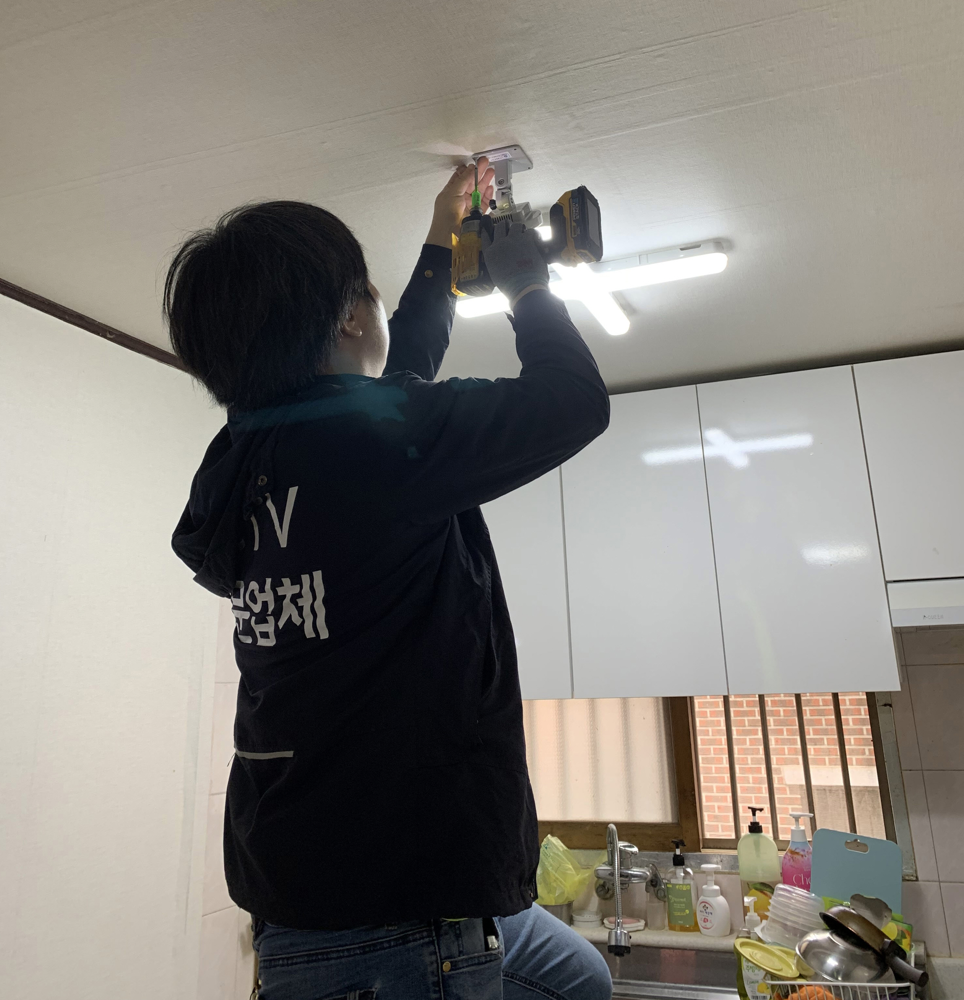

용산구, AI·IoT 활용 51개 스마트도시사업…48억 투입 주민 일상 바꾼다
AI 돌봄센서·지능형 CCTV, 생활밀착형 스마트행정 전면 확대

[시사포커스 / 김재록 기자] 서울 용산구(구청장 김경대)가 인공지능(AI)과 사물인터넷(IoT) 등 첨단기술을 행정 전반에 접목하며 스마트행정의 영역을 빠르게 넓히고 있다. 용산구는 올해 22개 부서에서 총 51개 스마트도시사업을 추진 중이며, 이 가운데 신규 사업은 19개, AI 활용 사업은 13개다. 사업 추진에는 총 48억6,300만원이 투입된다. 구는 돌봄·안전·복지·문화·민원 등 주민 일상과 맞닿은 분야에 기술을 적용해 행정서비스의 질을 높이는 데 초점을 맞추고 있다.
스마트행정의 변화가 가장 두드러지는 분야는 돌봄과 안전이다. 구는 돌봄이 필요한 1인 가구의 집 안에 레이더 센서를 설치해 심박수·호흡수·낙상 여부 등을 실시간으로 확인하는 '방방곳곳 케어온(ON)' 사업을 운영하고 있다. 지난 3월 후암동에 거주하는 한 어르신에게 심장질환 이상 징후가 발생했을 때 센서가 변화를 감지해 긴급 이송으로 이어진 실제 사례가 있었다. AI 안부확인서비스도 운영 중으로, 현재 1,054가구가 참여하며 AI 안부전화는 1만 5,858회, 별도 유선 확인은 923회 진행됐다. 김경대 용산구청장은 "스마트행정은 거창한 기술을 보여주는 것이 아니라 주민들이 일상에서 불편을 덜 느끼고 더 안전하고 편리하게 생활하도록 만드는 데 의미가 있다"며 "앞으로도 AI와 데이터, IoT 등 새로운 기술을 행정에 적극 접목해 주민들이 실제로 체감할 수 있는 생활밀착형 서비스를 지속적으로 제공하겠다"고 말했다.
용산구의 스마트행정은 기술 도입에만 머물지 않는다. 지역 데이터를 분석해 정책의 정확성과 현장 대응력을 높이는 데이터 기반 행정도 강화하고 있다. 내년부터는 '용산 실시간 스마트맵'에 대화형 거대언어모델(LLM) 서비스를 도입해 다양한 데이터를 자연어로 검색·활용할 수 있도록 할 계획이다. 도서관에서는 AI가 이용자의 연령·성별·취향 등을 분석해 맞춤형 책을 추천하고, 외국인 주민과 관광객을 위한 AI 다국어 동시통역 서비스, 저시력 방문 민원인을 위한 AI 시각보조기기도 운영 중이다. 올 하반기에는 원효제1경로당을 스마트경로당으로 추가 조성할 예정이다.